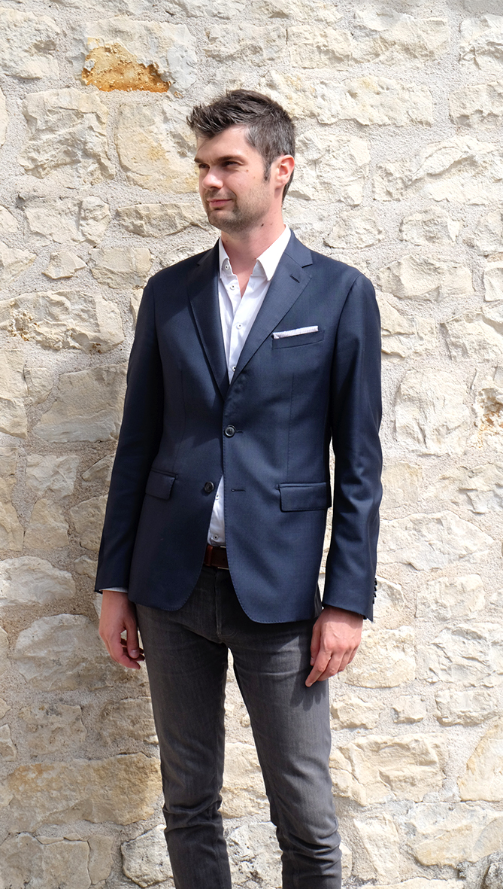

Objectif
J'ai pour objectif de devenir développeur front-end et d'être opérationnel début 2025.
Mes expériences passées me permettront de couvrir des projets complet et d'accompagner le client de A à Z.
Cursus
- 2016 - Qualificaction de conseiller immobilier - Century 21
- 2010-2012 Ecole de communication visuelle - Graphicréatis
- étude du besoin
- élaboration d'une charte graphique
- Création d'une identité visuelle et de logo
- Mise en place sur support adapté
- 2009 - Bac S SI
Expérience professionnelle
- 2012 - 20 15 Graphiste Indépendant
-
2019-2024 Harmonie Médical service Brest - Commercial Collectivité
- Développement commercial en EHPAD, SSIAD et Hôpitaux (B2B)
- Assurer le suivi administratif et logistique
- Répondre aux besoins et être force de proposition de nouveautés
- 2018 - 2019 Conseiller immobilier en transaction chez Century 21 Brest (B2C)
- 2017 -2018 Téléconseiller chez Be Move
- 2015 - 2017 Conseiller immobilier en transaction chez Century 21 Angoulême
Skills
Fort de mes précédentes expériences je suis en capacité de m'adapter aux besoins et de me former en conséquence.
Récompences
Lors de mon expérience en immoblier j'ai obtenu le certificat de qualification de conseiller immobilier.
J'ai également suivi une formation sur la gestion des budgets en EHPAD afin d'accompagner au mieux les structures et le pôle achat dans leurs projets.
Enfin, je suis en cours d'obtention du certificat Udemy du bootcamp de Dr. Angela Yu.
J'ai également obtenu le certificat OpenClassromm sur la création de site web.
En savoir plus sur moi
Restons en contact